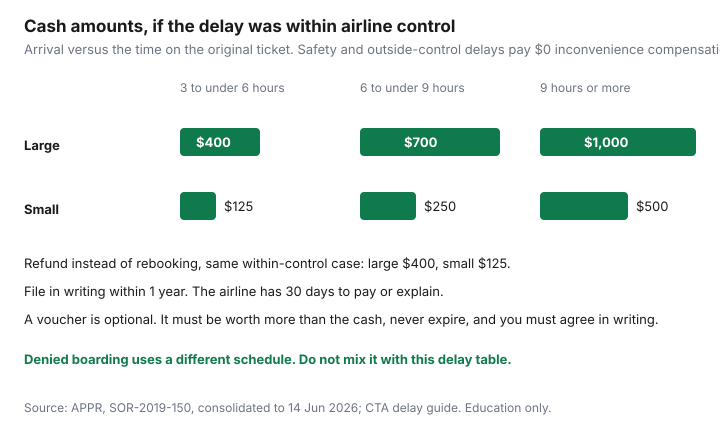

Travel · Canada
How to Claim Air Passenger Protection Compensation in Canada Without Getting Lost
A delay at the gate produces a QR code, a voucher, and a feeling that the paperwork is someone else’s job. The cash schedule is short. The work is knowing which of the three categories you are in, writing it down while you still have the boarding pass, and refusing a voucher that is worse than the cheque.
This is the Canadian regime, the Air Passenger Protection Regulations, not a reprint of European compensation rules. Figures below are the minimums in the regulations as consolidated to 14 June 2026 (last amended 8 September 2022) and the Canadian Transportation Agency’s delay guide. They are education, not a ruling on your flight.
Disclosure: There is no natural affiliate product in a passenger-rights claim. Saving Optimizer does not claim airline or claims-company partnerships. You file this yourself. Education only, not legal advice. Dollar amounts are the minimums in the Air Passenger Protection Regulations as consolidated to 14 Jun 2026.
Key takeaways
- Three categories: within the airline’s control, within control but required for safety, and outside the airline’s control. Inconvenience money is only the first one.
- Large airlines: $400 / $700 / $1,000. Small airlines: $125 / $250 / $500. The clock is how late you arrive, starting at three hours, and only if you were told 14 days or less before departure.
- File in writing within one year. Keep the boarding pass, the booking reference, the delay notice, and receipts.
- A voucher must be worth more than the cash, must not expire, and you must confirm in writing that you knew cash was available.
- No answer, or a thin answer, after 30 days: complain to the Canadian Transportation Agency.
- Separate tickets and a hotel you missed are not what this compensation pays.
Know the three disruption categories: within control, within control for safety, outside control
Every delay or cancellation the airline explains should land in one of three buckets. The bucket decides whether inconvenience compensation exists at all.
- Within the airline’s control, and not required for safety. Commercial decisions, including many staffing and scheduling problems the airline owns. This is the bucket that pays the dollar schedule, if you were told 14 days or less before the original departure and you arrive three or more hours late.
- Within the airline’s control, but required for safety. The airline still has to rebook you and, on this category, provide the standards of treatment (food, drink, a way to communicate, and lodging if you are stuck overnight). It does not pay the inconvenience amounts.
- Outside the airline’s control. Weather, air-traffic orders, security, a medical emergency, and the other causes the Agency lists in that family. No inconvenience compensation, and the food-and-hotel standard of treatment does not apply. Communication rules still apply. Rebooking or a refund still applies, on a different clock: once the delay hits three hours or the flight is cancelled, a confirmed seat on the airline or a partner within 48 hours of the original departure. If they cannot do that, you choose a refund or, with a large airline, a flight on any carrier.
Airlines sometimes name a category at the gate and a different one in the claim reply. The Agency’s guide says the written rejection has to explain the reason, and if the reason changed, why. Save the first explanation. A text that said “crew” and a letter that says “weather,” with no account of which cause actually made you late, is a reason to escalate, not a reason to stop.
Standards of treatment, when they apply, are part of the file even though they are not the $400. After two hours, food and drink in reasonable quantities. A way to communicate. If the delay is expected overnight, a hotel and the ride there and back. Keep receipts if you paid because the airline did not. Outside-control disruptions are the category where that assistance standard does not apply, which is why the category label matters before you expense a hotel.
Compensation amounts for large vs small airlines and the 3-hour arrival threshold
“Large” means the airline carried at least two million passengers in each of the two previous years, or is flying for a large airline under a commercial agreement. Everyone else is small. The CTA’s passenger page, modified 20 April 2026, listed these Canadian carriers as large: Air Canada (including Jazz and Rouge), WestJet, Sunwing, Air Transat, Flair, and Porter. Other Canadian airlines were small on that page. Classifications move. Ask, and do not guess from a logo you remember.
Compensation for a delay or cancellation in the within-control, not-for-safety bucket, when notice was 14 days or less, depends on arrival at the destination on the original ticket:
| How late you arrive | Large airline | Small airline |
|---|---|---|
| 3 hours to under 6 | $400 | $125 |
| 6 hours to under 9 | $700 | $250 |
| 9 hours or more | $1,000 | $500 |
| You take a refund instead of rebooking | $400 | $125 |

Under three hours of arrival delay, this schedule pays nothing, even if the departure board looked dramatic. The measure is the destination on the ticket, including a missed connection on the same ticket. Denied boarding (a bump) is a different schedule — $900, $1,800, and $2,400 in the Agency’s FAQ for involuntary denied boarding that is within the airline’s control and not required for safety. Do not paste the bump numbers onto a weather delay.
You cannot collect this inconvenience amount twice for the same disruption under two countries’ rules. You choose a regime. The airline does not get to refuse Canada’s rules merely because Europe’s might also apply.
File in writing within one year; keep boarding passes, receipts, and delay notices
You have one year from the delay or cancellation to file with the airline. Do it while the paper still exists. Write, do not only phone. A phone call does not start a clock you can show the Agency.
- Booking reference, flight number, date, and the arrival time printed on the original ticket.
- When you actually arrived at that destination. A photo of the inbound board helps.
- The reason the airline gave at the time, and which of the three categories you believe it is.
- The amount you are requesting, in Canadian dollars, from the table, and that you want it in monetary form.
- Copies: boarding pass, e-ticket, delay email or app notice, and receipts for expenses the standard of treatment should have covered.
Send it through the airline’s form and keep your own copy (email to yourself, or a PDF of the confirmation number). If a company offers to claim for a cut of the cheque, you do not need them for a straightforward file. This page is not a claims service and does not recommend one.
Reject voucher-only offers unless they beat cash and never expire—get it in writing
The Agency’s delay guide is plain. If compensation is owed, the airline must offer it in monetary form: cash, cheque, bank draft, or electronic transfer. It may also offer a voucher or other form, but only if all of these are true:
- It tells you the monetary amount you are entitled to.
- It tells you in writing the value of the other offer.
- The other offer is greater than the cash.
- The other offer does not expire.
- You confirm in writing that you know cash is available and you choose the other form anyway.
A $400 voucher that expires in a year, offered instead of $400 cash, fails the test. A voucher you accepted in the app at the gate, without that written confirmation, is not the end of the analysis — write and ask for the monetary amount if you did not knowingly trade up. Refunds of the ticket itself have a cousin rule: a travel credit instead of money back to the original form of payment also has to be non-expiring, and the airline has to tell you in writing that you can take the original method, and you have to confirm in writing that you chose otherwise. Read which one they are offering. Compensation for lateness and a refund of an unused ticket are different cheques.
Escalate to the CTA when the airline misses the 30-day response window
The airline has 30 days to pay or to say why it believes compensation is not owed. The explanation has to be full enough for you to decide whether to complain: the reason for the disruption, and why that reason means no compensation. If there were several causes or several flights, the guide says the reply should identify the primary reason you arrived late and which category that reason sits in.
When the 30 days pass with silence, or the reply is a sentence that does not match the facts you saved, file with the Canadian Transportation Agency. The Agency’s own instruction is to contact the airline in writing first. The complaint is the second step, not the first. Use the file you already built. You are not starting over.
International trips can also support a claim for certain damages under the Montreal Convention, on a longer clock (the Agency notes a two-year limit for court action). Ask the airline in writing first. That claim is for expenses and loss the delay caused. It is not a second copy of the $700.
What APPR does not cover: missed connections on separate tickets and hotel no-shows
The regulations follow the itinerary. A missed connection on two separate tickets is two contracts. The second airline did not delay you; you were late to a different booking. Buy a single ticket when the connection has to be the airline’s problem, or leave enough time that a miss is your own buffer. The booking-window guide is where that schedule choice belongs.
A hotel no-show, a prepaid tour you missed, and a wedding that started without you are not line items on the inconvenience schedule. Some of those costs are what trip cancellation or travel medical is for, and the medical half is an Insurance decision: provincial plans barely cover care abroad. APPR does not reimburse a resort because Pearson was late. If the airline owed you a hotel under the standard of treatment and did not provide one, that receipt belongs in the file with the airline. It is still not the $1,000.
Also outside this cheque: a delay under three hours on arrival; notice more than 14 days before departure; a safety category; an outside-control category. You may still be owed a rebooking or a refund. You are not owed the inconvenience table. Small-airline refunds and large-airline refunds follow the alternate-transport rules. Read the category before you demand the large-airline number from a regional carrier.
Sources & date stamps
- Air Passenger Protection Regulations, SOR-2019-150, Justice Laws consolidation current to 14 Jun 2026 (last amended 8 Sep 2022) — compensation amounts, one-year claim, large and small carrier definitions.
- Canadian Transportation Agency, “Flight Delays and Cancellations: A Guide,” and the passenger page “Flight delays and cancellations” (modified 20 Apr 2026) — categories, voucher conditions, 30-day response, 48-hour outside-control rebooking, large-airline list. Used 23 Sep 2026.
- CTA FAQ on the regulations — denied-boarding amounts are a separate schedule ($900 / $1,800 / $2,400). Used so households do not mix the tables.
Frequently asked questions
How much is flight delay compensation in Canada?
If the delay or cancellation was within the airline’s control, not required for safety, and you were told 14 days or less before departure, large airlines pay $400, $700, or $1,000 based on a late arrival of 3 to under 6 hours, 6 to under 9, or 9 or more. Small airlines pay $125, $250, or $500. A refund instead of rebooking is $400 large or $125 small. Safety and outside-control delays do not pay this inconvenience amount.
How long do I have to file?
One year from the day of the delay or cancellation, in writing to the airline. The airline then has 30 days to pay or to explain why it believes nothing is owed. After that, or if the reply is inadequate, you can complain to the Canadian Transportation Agency.
Should I take the voucher?
Only if it is worth more than the cash amount, it never expires, the airline told you the cash number in writing, and you confirm in writing that you are choosing the voucher anyway. A voucher that merely matches the cash and expires is a worse offer.
What if the airline says it was weather?
Outside-control disruptions, including many weather events, do not pay inconvenience compensation. They can still require rebooking or a refund. If the gate message said crew and the letter says weather with no explanation of what actually made you late, keep both and escalate after the 30-day window if the reply stays thin.
Does this cover a hotel I missed, or a separate ticket?
No. A missed connection on a separate ticket is a different contract. A prepaid hotel or tour you missed is not the inconvenience schedule. Travel medical and trip policies are an Insurance question, not this claim.